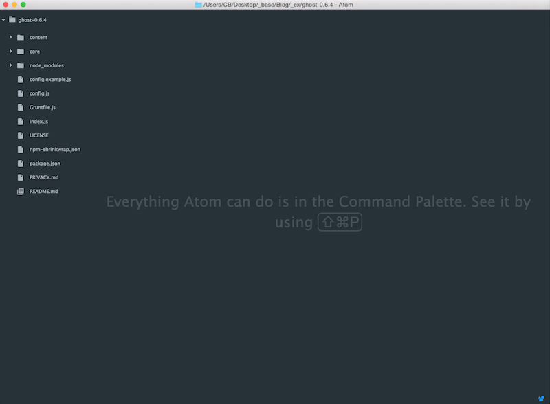
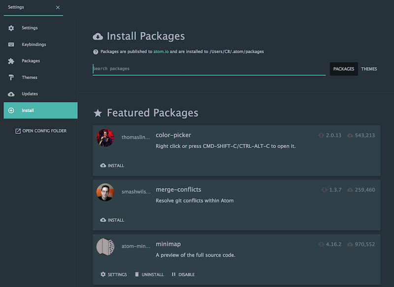
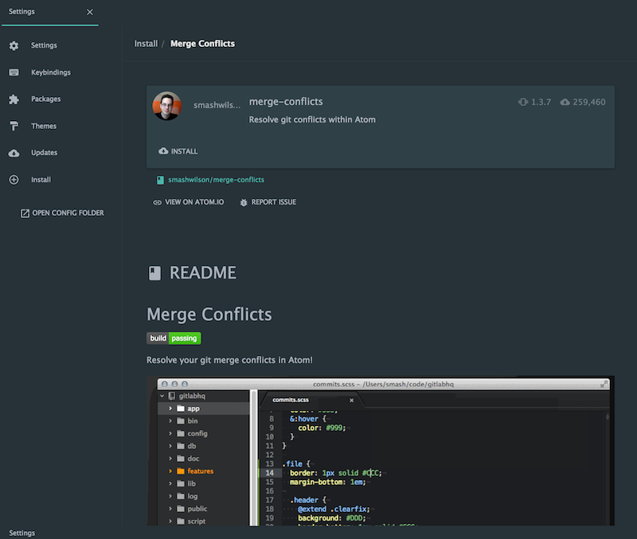
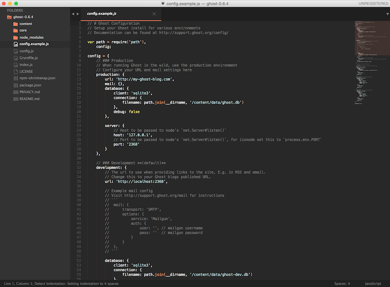

The text editor you've always wanted vs. the text editor you'll fall in love with. Which one I fell for and why.
Atom, the text editor you've always wanted.
Sublime, the text editor you'll fall in love with.
In this post, I'll touch on some advantages of each text editor, as well as some complaints I've seen for each. This is a general overview and therefore, should be read as such. That said, let me preface this conversation by saying use what you're comfortable with given it meets your needs.
Anyways, let's get to it.
Update: I've decided to move back (yes, I originally used it) to Atom due to React.js support through Nuclide.
The Complaints (and Praise)
When I was in the predicament of choosing a text editor a couple of months ago, I did some research and the following complaints seem to sum up the pros and cons of each.
Can you guess which text editor these belong to?
As long as xxx doesn't open larger than 2mb files. I just couldn't handle the poor performance compared to xxx.
This is one you'll hear of quite often if you're thinking of, or already using, Atom. And to be honest, this is its biggest downfall. There were two occasions where I saw this come to play firsthand:
I had an instructor try to demo some keyboard shortcuts using Atom, and he opened a larger project based in Unity (he designed games as well). After waiting more than 30 seconds to start up, it crashed.
During a student presentation on Why Atom was better than Sublime Text, one of the fellows at MakerSquare asked the student to open a large JSON file in Atom. Let's just say, there weren't many Atom converts after that.
xxx has all the nice visual preference dialogs, basic stuff that makes life a lot easier.
If you've ever opened or used Sublime, it's pretty plain (no pun intended). Atom is a much cleaner and user-friendly text editor, especially for beginners. They even pride themselves on being full-featured right out of the box. And it is.
Here's a screenshot of what you would normally see when you start working on a project in Atom — lots of direction with minimal trouble.

Take a look at the visual side of the package manager. xxx renders the full Markdown README with screenshots.
To add to the point above, Atom is beautiful (and easier to use). If you're going to be staring at code for hours on end, don't you want the interface to look good?
On top of that, Atom has a lot of the functionality already built in. Atom ships with a built-in package manager (unlike Sublime). Below are some screenshots of Atom's package manager.


It's sooooo slow for a text editor. I have a $3000 workstation at work and a retain MacBook Pro and xxx takes at least 5 seconds to launch while xxx is instantaneous.
Atom is slow (for what it is).
This is a bit controversial, but ultimately comes down to the work you'll be doing. How often will you be opening large text files? If your answer is "often", use Sublime.
What I settled on
I use Sublime Text 3. Why? I can get everything I want from Atom (in terms of visual appearance) without running into the performance issues Atom is known for. Below is what my Sublime looks like.

And this is how I got it that way:
- Predawn theme. This is what gives me the darker layout that looks similar to Atom. You can download it HERE.
- Split window aka two column coding. I'm not even sure why this is a "feature" for Atom. You can enable this on Sublime by going to View > Layout > Columns: 2
- Sublime Package Manager. If you want something similar, but not as descriptive as Atom's Package Manager, I recommend THIS.
- Finally, below are my user settings for Sublime with the Predawn theme installed.
{
"color_scheme": "Packages/Predawn/predawn.tmTheme",
"font-face": "Roboto Mono",
"ignored_packages":
[
"Vintage"
],
"predawn_sidebar_medium": true,
"predawn_tabs_active_underline": true,
"predawn_tabs_medium": true,
"tab_size": 2,
"theme": "predawn-DEV.sublime-theme"
}
TL;DR - Although Atom definitely feels like the text editor for the 21st century, it doesn't seem to perform at that level yet. When the Atom community starts to grow and the same level of support is provided, they'll start to see more users migrate.
But in the meantime, I've gone with Sublime Text.